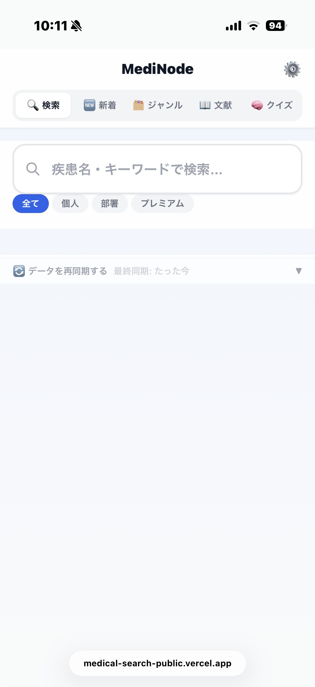
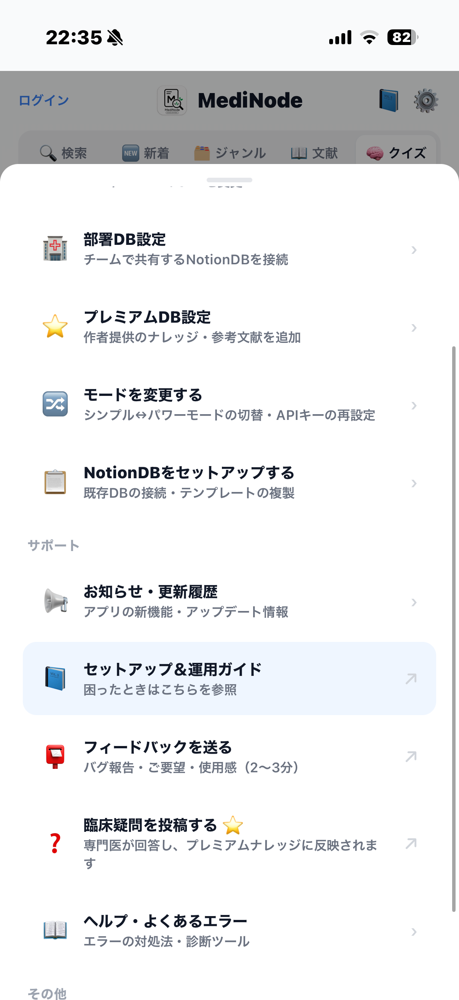

自分の知識（個人）、職場の共有知識（部署）、作者がキュレーションした知識（プレミアム）。所有者フィルタで切り替えながら、串刺しで検索できます。
検索バーの下のタブで、どの知識を対象にするかを切り替えます。「全て」を選べば横断検索できます。
個人・部署・プレミアムをまとめて横断検索。
自分のNotion DB由来の知識。日々ためた第二の脳。
職場で共有するNotion DB由来。チームの知識を全員で。
作者が運営する専用の医療知識。自分の設定は不要。

同じ知識を、2通りの速度で。まず試すならシンプル、速度重視ならパワー。切り替えは設定から。
| シンプルモード | パワーモード | |
|---|---|---|
| データ元 | Notion 直接検索 | Algolia（事前同期） |
| 速度 | 表示まで1〜3秒 | 0.1秒以下・爆速 |
| 同期 | 不要（ライブ反映） | 手動で再同期 |
| 必要な鍵 | Notion Token のみ | Notion + Algolia |
| 向く人 | まず試す・即反映重視 | 速度・大量データ重視 |
| 位置づけ | 必須・標準 | 任意・パワーアップ |
MediNodeは便利そう。でも——「自分のNotionに医療知識を一から書きためる」のは、正直しんどい。最初は中身がほぼ空で、検索しても何も出てこない。
専門医がすでに作り込んだ知識ベースが、最初から入っている状態に。あなたは集める前から、確かな知識を検索・クイズで使えます。
具体的には、作者（救急科・集中治療専門医の Dr.ノード）が継続的にメンテナンスする 医療ナレッジDBと参考文献DBを、アプリ内で配信。 あなた自身のメモ（個人）・職場の知識（部署）と同じ画面に並べて串刺し検索できます。 臨床の現場で「使える形」に整理された知識が、設定なしですぐ手に入る——それがプレミアムです。
専門医がキュレーションした知識を、あなたの知識と並べて、全タブで活用できます。
救急・集中治療の現場で使う知識を、専門医が継続的に追加・更新。自分で一から集めなくても、確かな知識をすぐ引けます。
気になる臨床疑問を投稿すると、専門医が回答し、プレミアムナレッジに反映。みんなの疑問が、みんなの知識に育っていきます。
個人・部署・プレミアムを「全て」で統合検索。自分のメモと専門医の知識を、同じ画面で並べて確認できます。
検索・新着・ジャンル・文献・クイズのすべてのタブで「⭐プレミアム」フィルタが効きます。クイズ学習の問題集としても。
あなた個人のNotionもAlgoliaも不要。シンプルモードのままでも利用でき、登録すればすぐ表示されます。
メールアドレスだけのログイン（パスワード不要）で、スマホ・PCなど複数端末に契約を引き継げます。
解約はいつでも可能。手続き後、次回更新日以降の課金は発生しません。気軽に試せます。
各タブの「⭐プレミアム」フィルタ、または設定パネルの登録ボタンから手続きできます。
プレミアムは公開後、アプリ内（決済代行：Stripe）でお申し込みいただけます。カード情報はStripeが管理し、アプリは保持しません。最新の料金は登録画面の表示をご確認ください。

右上の歯車から、運用に必要な操作へまとめてアクセスできます。
シンプルモードと個人フィルタだけでも、十分に「第二の脳」になります。プレミアムは必要になってからで大丈夫です。
公開情報を見る MediNodeは2026年7月中旬に公開予定です